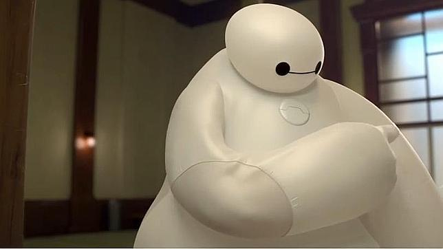

Star Wars roboti

Ako ste ljubitelj Ratova zvijezda , šanse da niste čuli za C-3PO su otprilike 3.720 do 1. Njegovi će članovi posade možda doći u iskušenje da ga s vremena na vrijeme zatvore ili isključe.
C-3PO je programiran na svim poznatim jezicima i običajima. R2-D2 nestašni je uznemirivač koji ne govori riječima, ali ga nikad nije teško razumjeti, dizajniran za sučeljavanje s računalima i održavanje zvjezdanih brodova na putu.
WALL-E
Kao robot za nabijanje koji je postigao osjećaj , jedini je za svoju vrstu za koji se pokazalo da još uvijek funkcionira na Zemlji.
On je mala pokretna kutija za zbijanje s gazištem za sve terene, rukama s lopaticama s tri prsta, binokularnim očima i uvlačivim solarnim ćelijama za napajanje. Iako marljivo radi na ispunjavanju svoje naloge za čišćenje smeća.
Baymax

Robot na napuhavanje koji je Tadashi izgradio kao medicinskog pomoćnika. Hall je rekao: "Baymax gleda na svijet iz jedne perspektive - on samo želi pomoći ljudima. Činjenica da je njegov lik robot ograničava način na koji možete osjećati emocije.
Baymax je umjetni sinformer koji je sposoban sintranstirati svoje tijelo u različite oblike. Njegov zadani oblik je krupan humanoidni mužjak dizajniran da bude manje uočljiv u javnosti.